CURITIBA · COZINHA MEXICANA & PERUANA
Onde o México
e o Peru se
encontram.
Uma casa vibrante, feita de receitas com origem, técnica e muito coração.
Duas culturas à mesa.
Uma experiência só sua.
Uma experiência só sua.
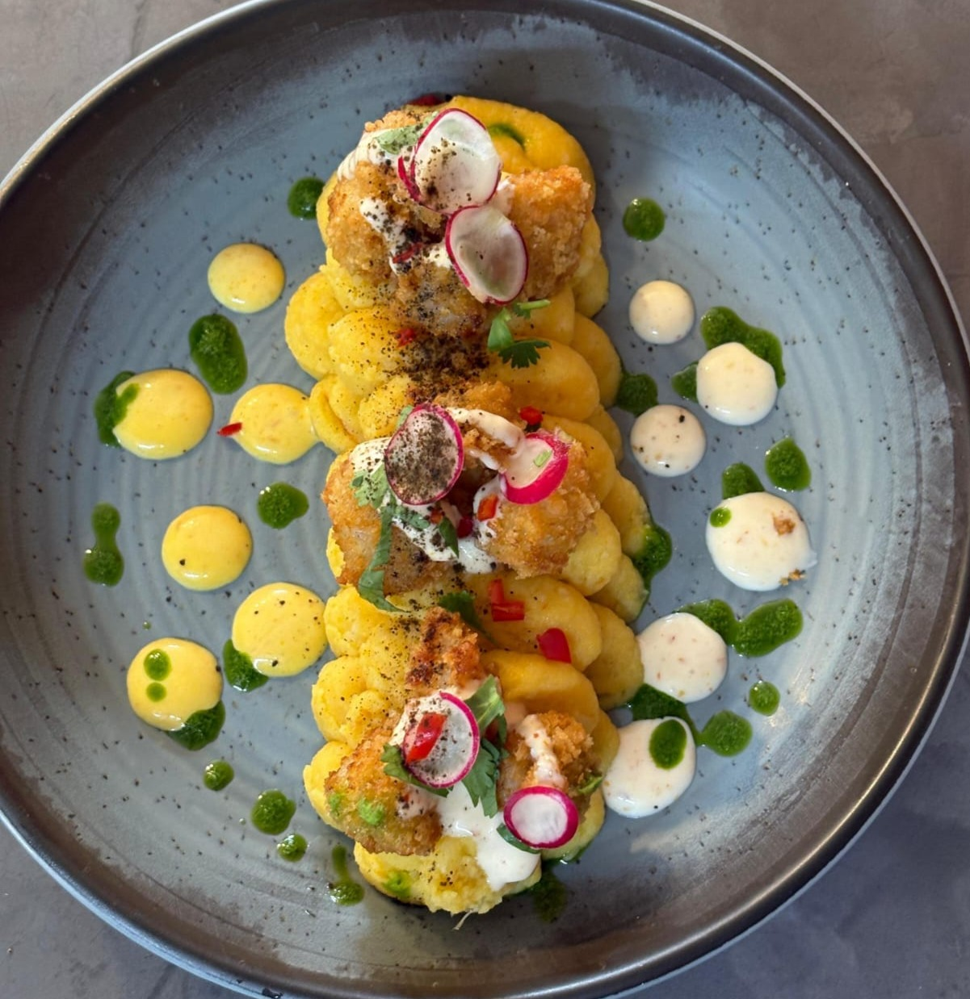
San Francisco, CuritibaComida com alma e coração
🇲🇽 MÉXICO✦🇵🇪 PERU
Hecho
con
amor✿
con
amor✿
Sabores que contam históriasFeito na hora · servido com afeto
MÉXICO✿PERU✳CURITIBA✿COZINHA LIVRE✳MÉXICO✿PERU✳CURITIBA✿COZINHA LIVRE✳
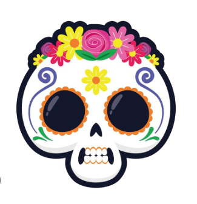
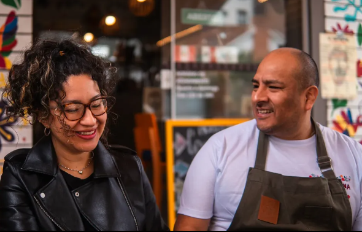
LA CHINGONAUma casa de família
✿ A CASA
Mais do que um lugar para comer.
Um lugar para sentir.
Parece que tudo acontece ao mesmo tempo por aqui — e é nesse ritmo, nesse movimento, que a Chingona ganha vida.
Somos uma casa vibrante onde duas das gastronomias mais ricas do mundo se abraçam. Quando a casa enche de conversas, risadas e aromas que saem da cozinha, sabemos que cada detalhe vale a pena.
Por trás de cada receita existe técnica, respeito às origens e uma paixão gigantesca pela nossa comida. Cada dia é construído com sabor, identidade e muito coração.
Conheça quem faz acontecer✿ UMA MESA, MUITAS HISTÓRIAS
Sabores que chegam
com passaporte.
Do primeiro totopo à última colherada, cada prato carrega uma lembrança — e um pouquinho da nossa casa.
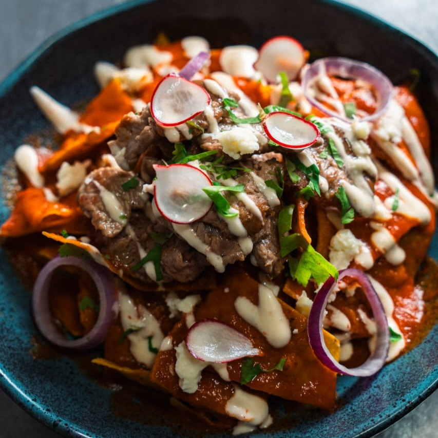
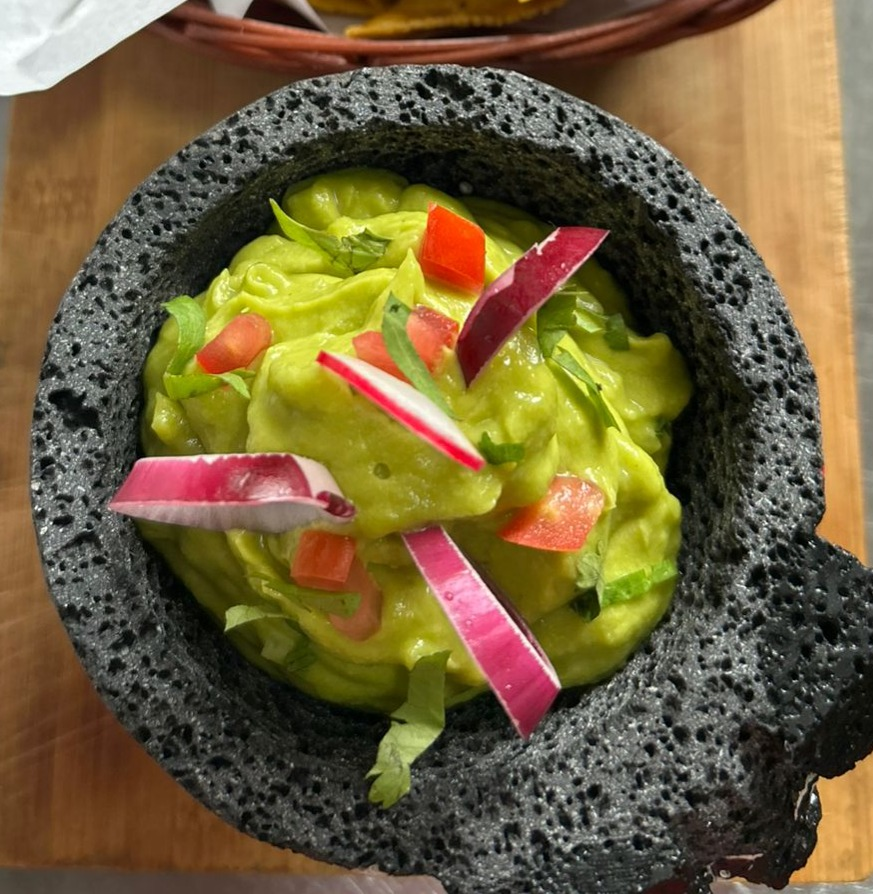
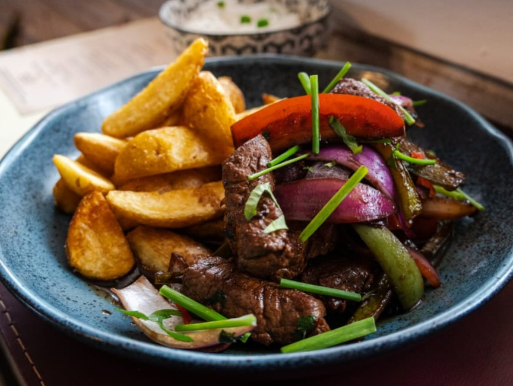
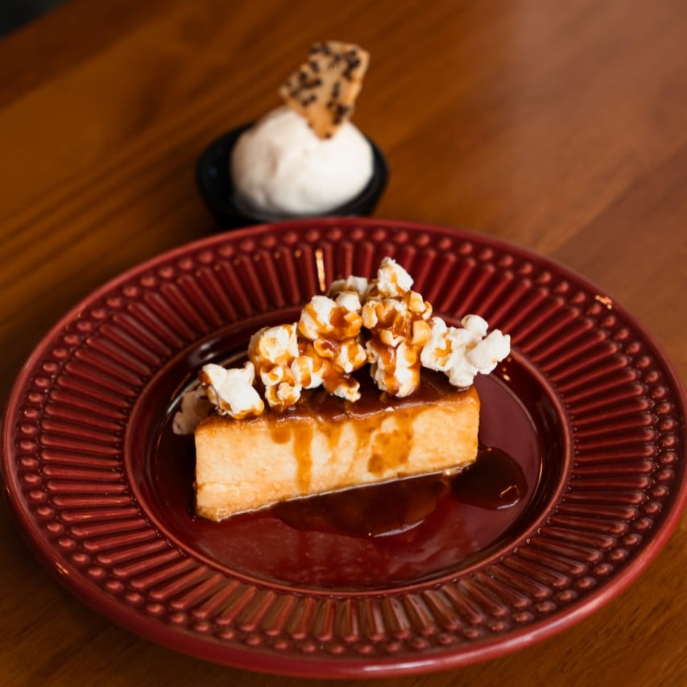
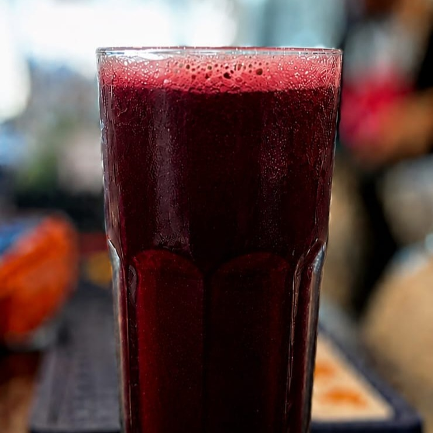
UM PEDACINHO DA NOSSA CASA
Veja a Chingona
em movimento.
Sabores, bastidores e momentos compartilhados no Instagram.
Ver Reel da La Chingona no InstagramAssistir ao Reel no Instagram ↗
Ver Reel da La Chingona no InstagramAssistir ao Reel no Instagram ↗
Se o Instagram não carregar a prévia, abra o Reel pelo link abaixo de cada vídeo.
✿ QUEM FAZ ACONTECER
As mãos e mentes
por trás do sabor.
Duas raízes, uma cozinha e o mesmo desejo: dividir com você tudo o que amamos comer.
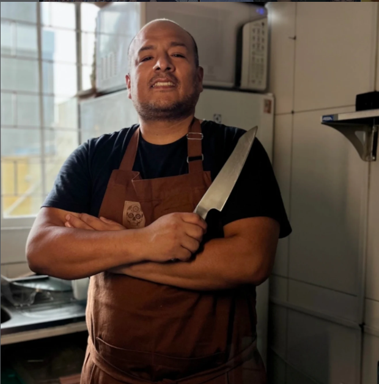
PERU✿
Com essência e alma peruana, Carlos construiu uma trajetória internacional como Chef Executivo. Seu domínio da culinária internacional e de técnicas refinadas dá ao menu da Chingona um toque muito próprio.
MÉXICO
✿
✿
Orgulhosamente mexicana, Elizabeth aperfeiçoou sua arte em sobremesas internacionais e na panificação mexicana. Mãe da Romina — a crítica mais rigorosa e querida da casa —, quer que ninguém sinta saudade do pão de sua terra e que os brasileiros se apaixonem pela tradição e pelos aromas do México.
Feito em família, servido de coração.
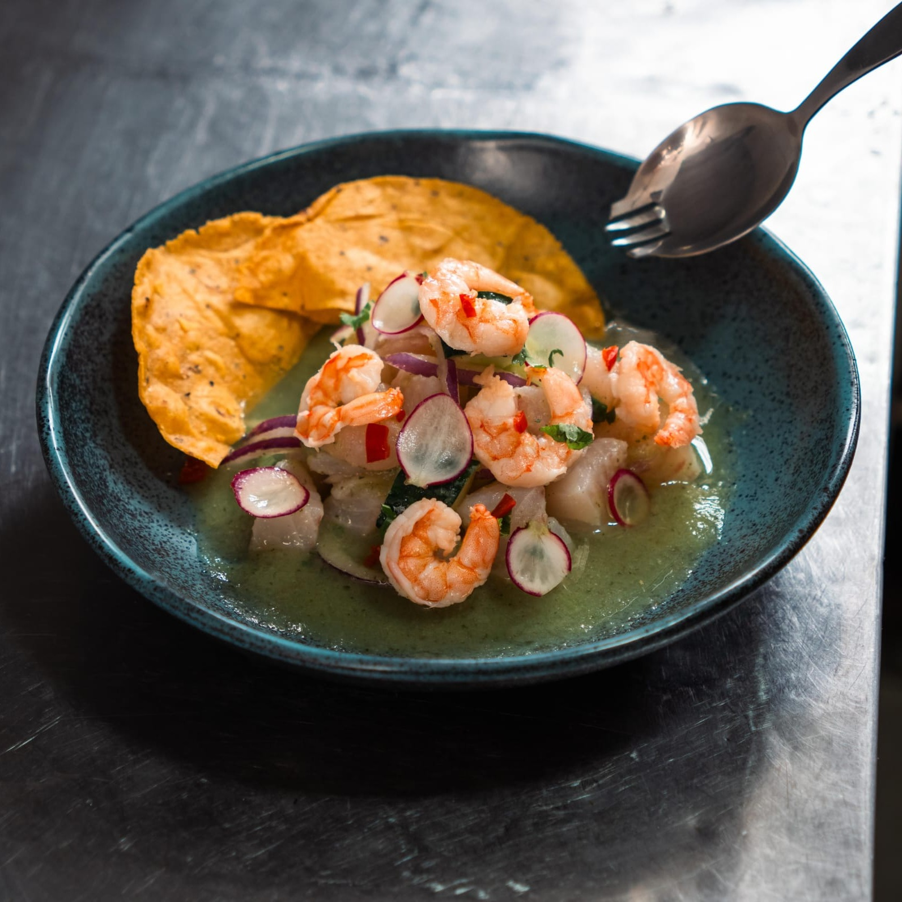
Cada receita carrega uma origem.
Cada mesa, uma nova história.
LA CHINGONA · COZINHA LIVRE
✿ A GENTE TE ESPERA
Venha com fome.
Saia com história.
Encontre seu lugar à mesa, peça seu prato favorito ou deixe que a gente surpreenda você.
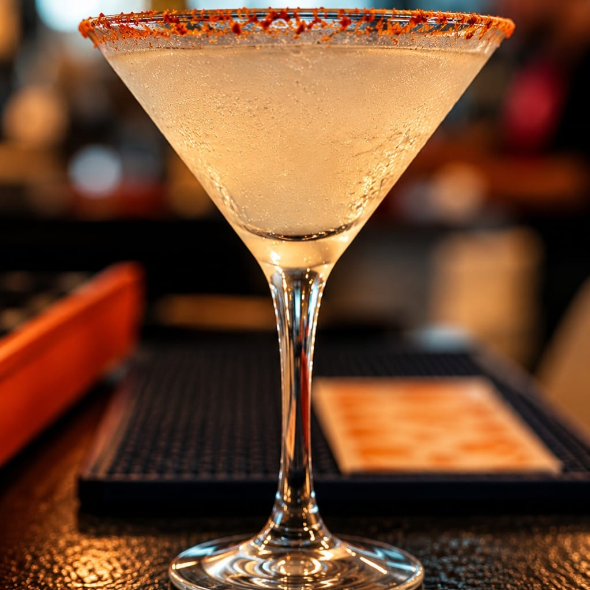
¡Salud!ou um brinde à mesa